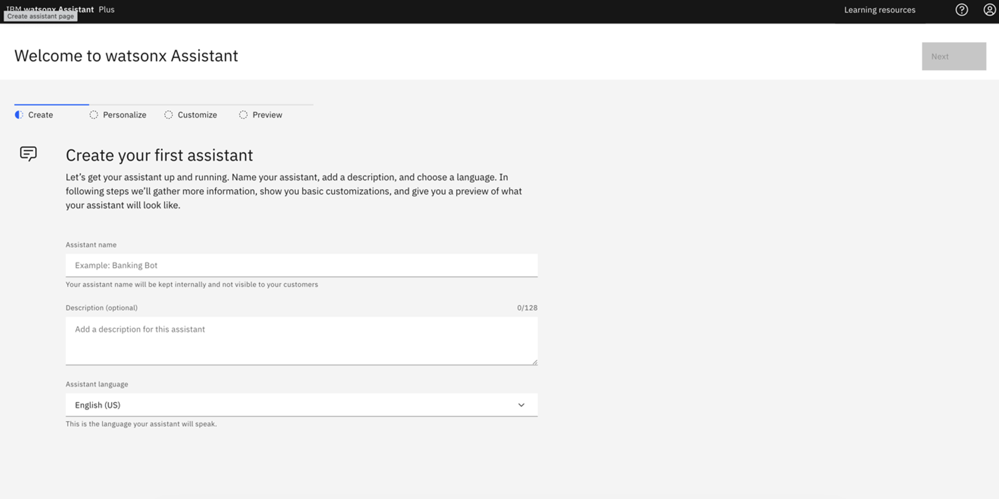
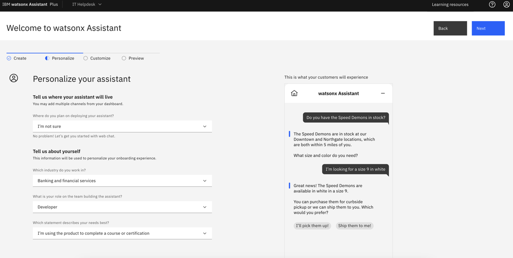
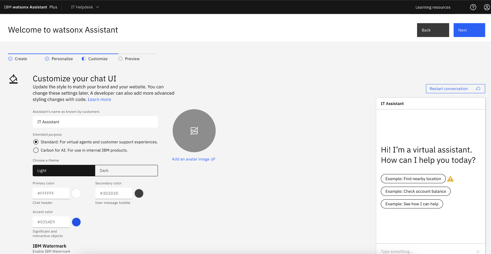
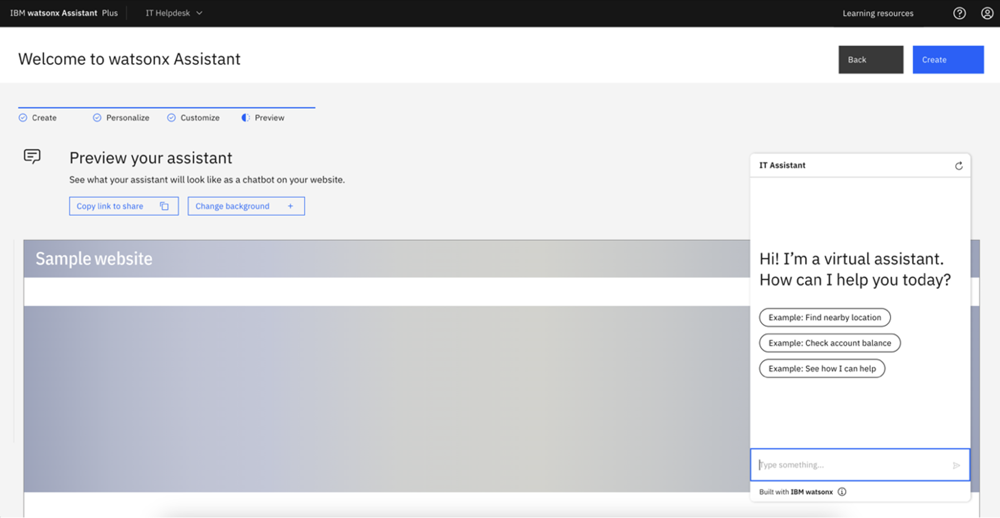

watsonx Assistant Setup
Details regarding the technical solution on how we configured Watsons Assistant to enable Core capabilities.
- Some examples of Key capabilities are:
- Conversational Interface: AskFinance allows users to query ERP system data through natural language conversations, enabling easy access to financial information.
- LLM-driven Financial Trend Analysis: Powered by watsonx.ai LLMs, AskFinance analyzes financial data to identify trends, patterns, and anomalies, providing actionable insights for informed decision-making.
- Budget Planning Assistance: AskFinance assists with budget planning by providing predictive analytics and scenario planning, enabling controllers to make data-driven decisions.
- Some example questions are:
- How did total revenue evolve from Q1 2020 to Q4 2023?
- Could you please help analyze how consistent the revenue growth was from 2020 to 2023
- Were there any quarters where expenses exceeded revenue, leading to a net loss?
- Are we seeing a spike in travel costs compared to 2021 and 2022?
- Based on the last 3-year trend expenses compared to revenue (2020-2022), what should be the travel and expense budget to consider for fall planning in 2025?
Pre-Requisites
Before going on to the following steps, please make sure you have the following instances available: * watsonx Assistant Instance * Watson Discovery Instance * watsonx.ai Instance
Create watsonx Assistant
If you do not have an watsonx Assistant, create new bot and fill in all required information. Please see Details section below.
- Fill in Assistant name (for example “AskFinance Assistant”), and click “Next”. 
- You’d see the following view. Fill in the form and click “Next”. 
- Fill in a name for you assistant. For example, enter “AskFinance Assistant”. Click “Next” 
- You’d see the following view. Click “Create” to complete creation of your watsonx Assistant. 
Build Custom Extensions
To enable AI conversations with financial data, we’d need to configure the Watson Discovery custom extension to access to data corpus and configure the watsonx.ai custom extension to leverage LLM capabilties.
Create Watson Discovery Custom Extension
- Once created, in your assistant, navigate to “Integrations” page.
- Click “Build custom extensions” -> click “Next” -> Input Extension name
Watson Discovery-> click “Next” - Download the Watson Discovery OpenAPI json file: watson-discovery-query-openapi.json and import file to WA. This file contains the configuration to enable accessing to watson discovery from watsonx assistant.
- click “Next” -> click “Finish”
- Lower Right corner of the Watson Disovery extension, click “Add” -> click “Add” -> click “Next”

- In Authentication page, in the Authentication type dropdown, select “Basic auth”
- For Username enter
apikey - For password and discovery_url, within IBM Cloud -> resource list -> click on you Watson Discovery Instance
- You’d see the following view.
- Copy API Key and paste it in Password field.
- Copy URL and paste it in discovery_url and remove
https://from the beginning of the string
- For Username enter
- Click “Next”, click “Finish”, click “Close”
Create watsonx.ai Custom Extension
- In your assistant, navigate to Integrations page, click “Build custom extension” -> click “Next” -> Input Extension name
watsonx.ai-> click “Next” . - download json file: watsonx-openapi.json and import file to WA
- click “Next” -> click “Finish”
- Lower Right corner of the watsonx extension, click “Add” -> click “Add” -> click “Next”
- In Authentication page, in the Authentication type dropdown, select “OAuth 2.0”
- For Apikey, create and copy a new API key from API key
- For Server variables, select the region that matches where your environment is configured in.
- Click “Next”, click “Finish”, click “Close”
- Your Extensions section will appear as following screenshot once both Watson Discovery and watsonx.ai custom extensions were configured.

Upload/Download actions
To reinstate a backup copy of actions that you exported from another service instance or environment, import the JSON file of the actions you exported.
Upload Actions:
- On the Actions page of watsonx Assistant, click on Global Settings.
- On the Upload/Download tab, click the Upload button and upload an actions.json file.
Configuration after uploading Actions
- Example: Configure the “Invoke watsonx generation API” action
- On Step 1, click “Edit extension” to setup watsonx.ai custom extension.

- For the Extension options, select “watsonx.ai” and for the Operation options, select “Generation”
- For “Parameters”, configure the following to pass the these variables to the watsonx.ai custom extension properly.
- set version to
watsonx_api_versionvariable - set input to
model_inputvariable - set model_id to
model_idvariable - set project_id to
watsonx_project_idvariable
- set version to
- Click “Apply”, and click “Save”.
- On Step 1, click “Edit extension” to setup watsonx.ai custom extension.
Download Actions
- To download: On the Upload/Download tab, click on the “Download” button to export action.json file.

- Reference: Uploading or downloading all actions
Modify AI Assistant
Conversation Starters
- Navigate to the “Preview” tab. Click the blue “Customize web chat” button.

- Navigate to the “Home screen” tab. Modify the Greeting messages and Conversation Starters to match frequently asked questions.

Advanced watsonx Assistant Configuration
Autocorrection
- To tackle typos, we leveraged watsonx assistant capability of Autocorrection.
- To enable this feature, navitate to Actions -> All items -> Created by you. Click “Global Settings” on the upper right corner.

- Navigate to the Autocorrection tab and make sure the toggle is switched to on.